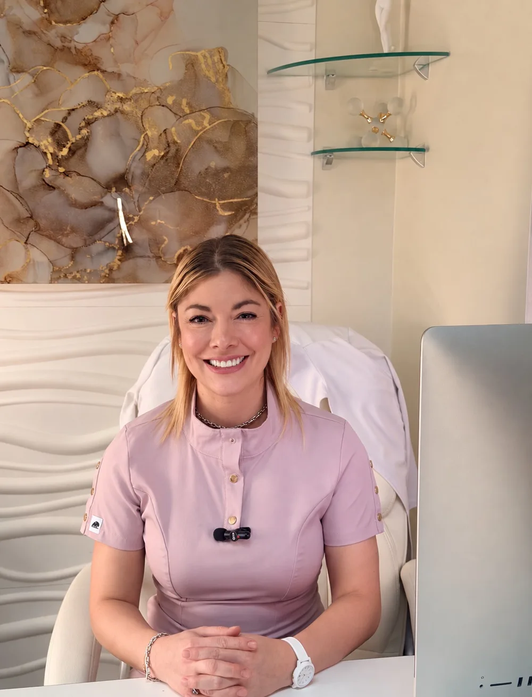

Perimenopausia y menopausia
Síntomas, bienestar y salud a largo plazo.
Consulta premium, personalizada, en Escazú.
Ginecología y obstetricia con tiempo para escucharte.
Agendar por WhatsAppCambios de ciclo, sueño roto, sofocos, ánimo que sube y baja, intimidad que cambió. No son exageraciones. Tienen causas y se pueden tratar.
Me dijeron que era la edad.Aquí se investiga qué pasa, no se descarta.
Nadie me explicó mis opciones.Te explico cada una, con sus beneficios y sus riesgos, en palabras claras.
Me da miedo la terapia hormonal.Es una duda válida. La decisión se toma juntas, con tu historia sobre la mesa.
Evaluación completa de tus síntomas, tu historia y tus metas. Defino contigo un plan que cabe en tu vida, con o sin hormonas.
Me apasiona la endocrinología y la fisiología femenina. Por eso la terapia hormonal se indica, se ajusta y se revisa según tu caso, y solo si tiene sentido para ti.
Desde planificar un embarazo hasta el parto y el posparto. También planificación familiar y salud reproductiva, según lo que tú busques.
Síntomas, bienestar y salud a largo plazo.
Ciclos irregulares, síndrome de ovario poliquístico, tiroides y más.
Evaluación y acompañamiento para buscar un embarazo.
Seguimiento del embarazo, con cercanía.
Métodos anticonceptivos según tus metas.
Prevención, papanicolaou y patología cervical.
Evaluación de piso pélvico y opciones de tratamiento.
Un espacio sin juicios para hablar de lo que importa.
Procedimientos en hospitales de primer nivel de Costa Rica.
Opciones para sentirte cómoda y segura en tu cuerpo.
Elige tu situación y te digo cómo trabajamos. Después puedes escribirme directo por WhatsApp.
Tu historia completa, tus síntomas y lo que esperas de esta etapa de tu vida.
Examen y estudios cuando corresponde. Solo lo necesario, explicado en palabras claras.
Un plan hecho a tu medida, con sus opciones, y un seguimiento para ajustarlo contigo.

Soy ginecóloga y obstetra, y atiendo la salud de la mujer en todas sus etapas, en lo clínico y en lo quirúrgico. Creo que toda mujer merece un trato humano y respetuoso, sin importar cuáles sean sus metas en la vida.
Mi plan de tratamiento y mi educación para ti parten de lo que tú esperas de tu vida, no de un protocolo único.
Conocer dos culturas me ayuda a entender creencias y formas distintas de vivir cada etapa. Eso se nota en cómo te escucho.
No. La perimenopausia puede empezar varios años antes de la última menstruación, y es buen momento para consultar si notas cambios en tu ciclo, tu sueño o tu ánimo.
No. Se indica según tus síntomas, tu edad, tu historia y tus antecedentes. La declaración de 2022 de la Sociedad Norteamericana de Menopausia (NAMS) señala que, en mujeres menores de 60 años o a menos de 10 años de la menopausia, el balance entre beneficios y riesgos es favorable para tratar los síntomas molestos cuando no hay contraindicaciones. Aun así, cada caso se decide en consulta. Ver la fuente.
Es una decisión tuya y se respeta. Hay otras opciones y ajustes de hábitos que revisamos según tu caso.
En Torre Médica I, Hospital CIMA, Escazú, Costa Rica. La consulta es de lunes a viernes, con cita. Para agendar, escríbeme por WhatsApp.
Sí. Realizo cirugías ginecológicas y obstétricas en hospitales de primer nivel de Costa Rica.
Sí, en español e inglés.
Escríbeme por WhatsApp y coordinamos tu consulta en Escazú.
Agendar por WhatsApp · 7249-8786